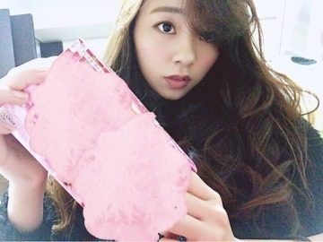

| 2015/12 30 Wed | 2015 2015 2015 川村ま ひろ 紅白前夜 |
こんばんは♡

すごく気持ち良さそうな服着てるでしょ。
白とびしてるけど、耳だって生えてるんだよ～．
うさぎじゃないよ～，羊だよ～．
これめっちゃ気持ちいいんですよ♡
もふもふだから毛布に包まれてる感覚．
この時期の寝間着は最高です．
クリスマスの握手会は，わりかしほとんどのメンバーがサンタになる中で，私はこの様な格好をしていました．
ははは♡
そしてそして～，
昨日と今日は紅白歌合戦のリハーサルでした.＊
初めての紅白，『なんだか緊張感...すごい。』と、感じました．
でもそんな緊張感すごい所でも私は精一杯楽しんできます♡ノ
「君の名は希望」。。。
心を込めて歌うよ。
ちゃんと皆さん見ててくださいね？
ぁ、そーだそーだ♪ いぇい．
「B.L.T. 2月号」乃木坂祭りですよん．
チェックよろしくお願いします⊂((・x・))⊃♡♡♡

今日は今年最後，せっちゃんに会ってきました． せっちゃんはあれですね、、、
「友達以上恋人未満」ってやーつ♡笑
最高の友達です^ ^
755に写真あげときました♡
せっちゃんは相変わらずぃい女って感じですよ．ノ 是非755の方もチェックお願いしま～す．
とりあえず最近は寒い。
という事で，箱の入浴剤を買っときました♡

ではでは体を温めて眠りにつきますね♡...
また明日TVの前で会いましょ～う．
おやすみなさい。
コメント(345)
2015/12/30 23:30